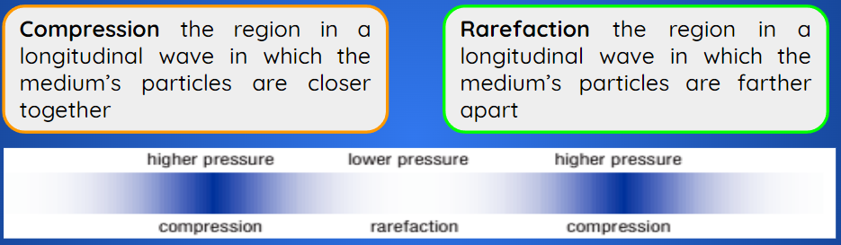

Select each item to learn more.
A wave in which particles vibrate perpendicular to the direction of the flow of energy. Water waves are a familiar example of transverse waves. A boat bobbing on waves moves up and down. This direction is perpendicular to the direction of the flow of energy of the water waves.
A wave in which particles vibrate parallel to the direction of the flow of energy. A Slinky creates longitudinal waves motion by sending pulses along the length of the Slinky. A pulse is a single wave or single disturbance.
Gas molecules have much greater freedom of movement, and they are in constant motion due to their temperature.

The terms “compression” and “rarefaction” correspond to the local pressure differences as the wave’s energy passes through the medium. When the particles are closer together, or compressed, the pressure is increased above ambient pressure. The term “ambient pressure” describes the average pressure of the gas; that is, the pressure it would have if the wave were not present. The regions where particles are farther apart, or rarefied, have a pressure that is lower than ambient pressure.
Sound
Transverse and longitudinal waves are basic types of waves. However, in many cases, these types of waves combine to form a more complex wave. For example, suppose you strike a piece of wood with a hammer. Some molecules are driven forward, initiating a longitudinal wave. The intermolecular forces that connect to the rest of the surface also create a transverse wave that radiates out along the surface